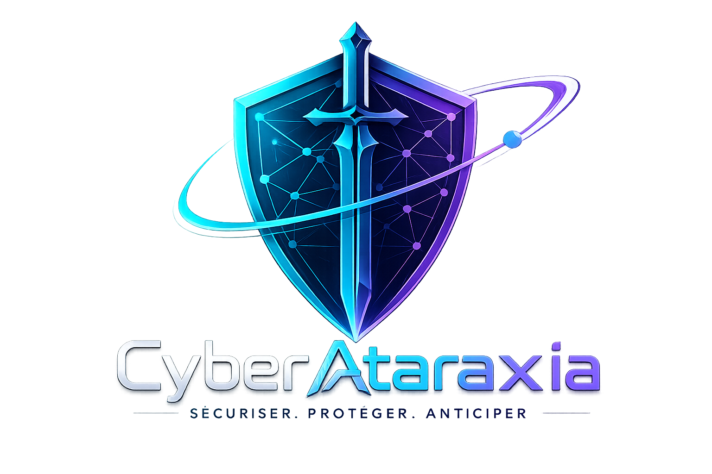

Ce questionnaire est destiné aux petites PME. Il couvre les 8 thèmes de la directive européenne NIS2 et prend environ 20 à 30 minutes. Vous pouvez naviguer librement entre les thèmes et sauvegarder votre avancement à tout moment.
💡 La directive NIS2 a pour vocation de guider les entreprises vers une meilleure sécurité informatique, et non de leur imposer des contraintes.
Avant de générer votre rapport, vous pouvez compléter les modules facultatifs ci-dessous pour enrichir l'analyse.